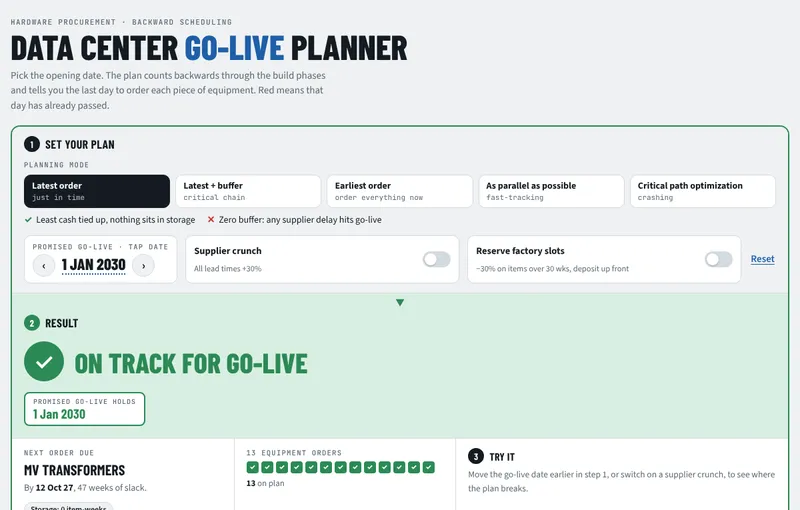
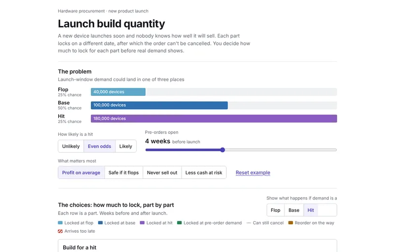
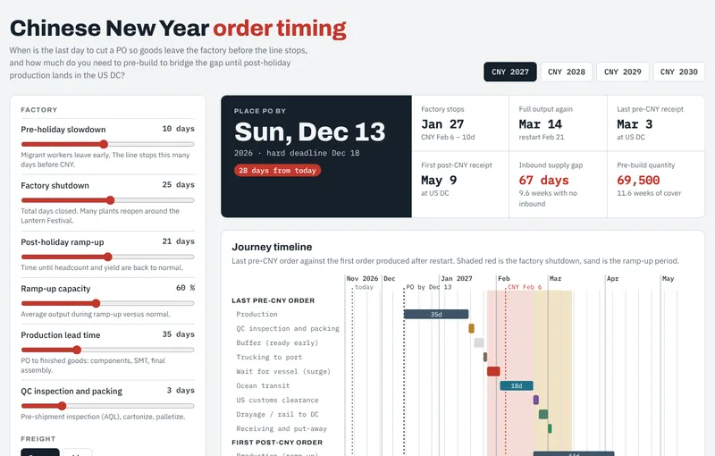

Supply chain decisions
Stories, tools and workbooks on supply chain decisions
I write up supply chain decisions I find interesting, and build small tools to try them myself.
Stories
Scroll stories about real decisions. Each one answers one question.
Disruptions
2 storiesSomething breaks without warning. How fast can the network recover?
Big supply bets
1 storyWhere to make things, and how much to build when demand is unclear.
History and models
2 storiesIdeas that still shape how supply is moved and shared today.
Tools
Interactive. Change the inputs and see what happens.
Allocation
2 toolsWho gets the stock when there is not enough for everyone.
Planning and timing
3 toolsWhen to order and how much, before the date you cannot move.

ToolData center go-live planner
Set an opening date and see the last day to order each piece of equipment.
Open tool
ToolLaunch build quantity
Decide how many parts to order for a new device before anyone knows how it will sell.
Open tool
ToolChinese New Year order timing
Find the last day to order before factories close, and how much stock to build ahead.
Open toolInventory and operations
2 toolsHow much stock to hold, and how a warehouse runs week to week.
Workbooks
Spreadsheet sets for running an operation, each with an Excel download.